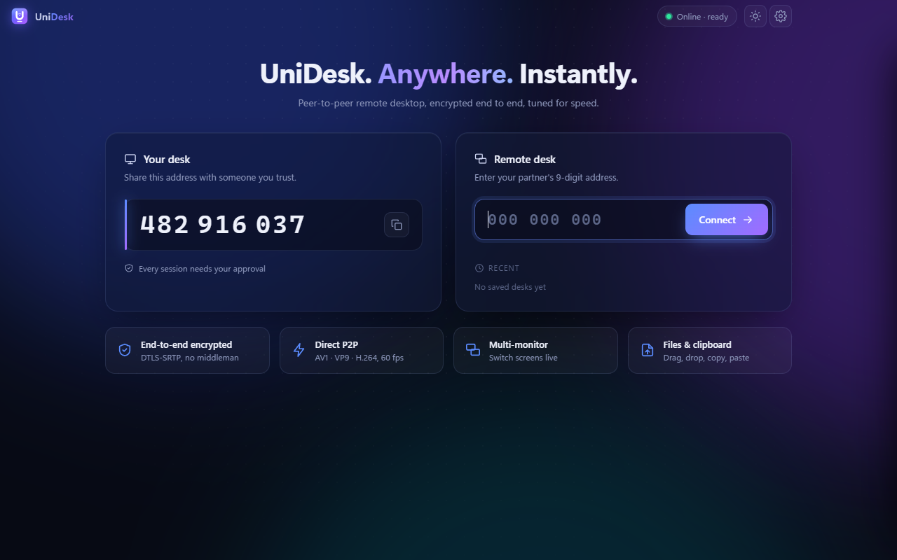
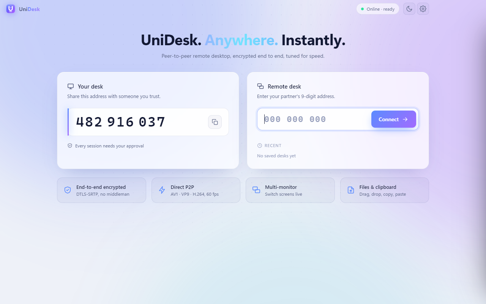
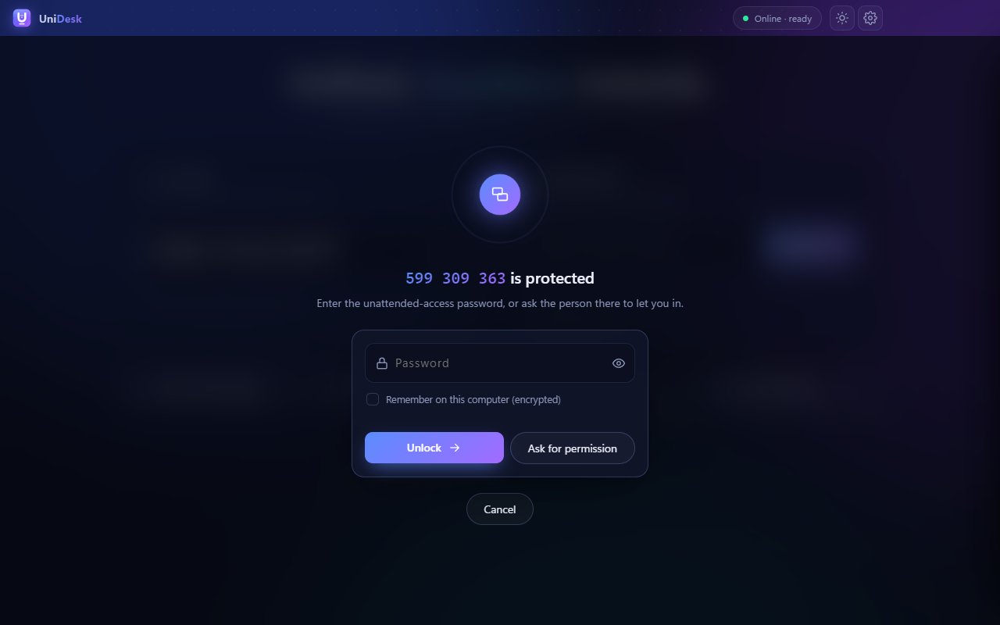
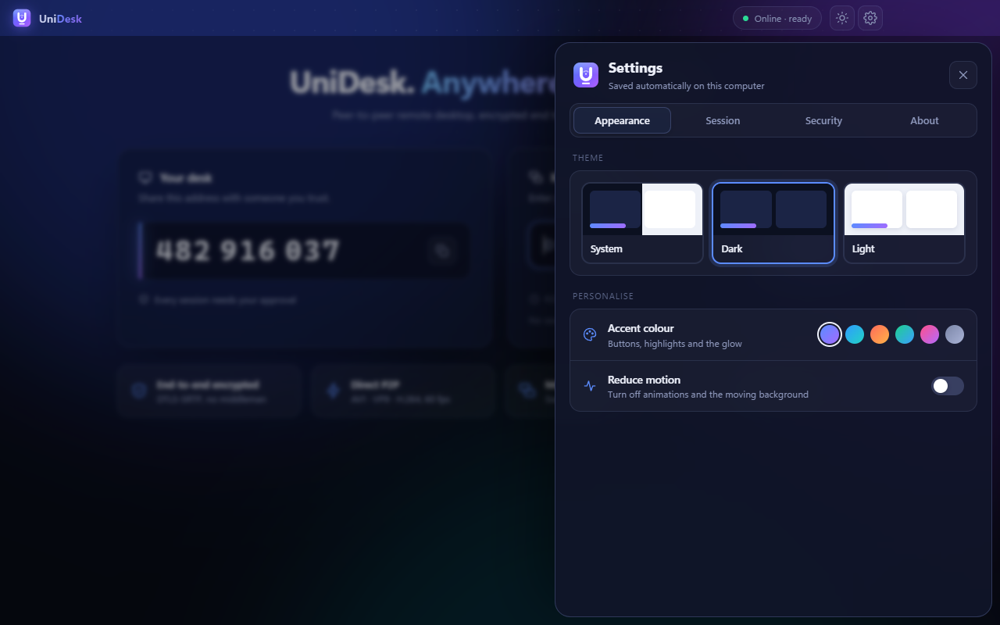
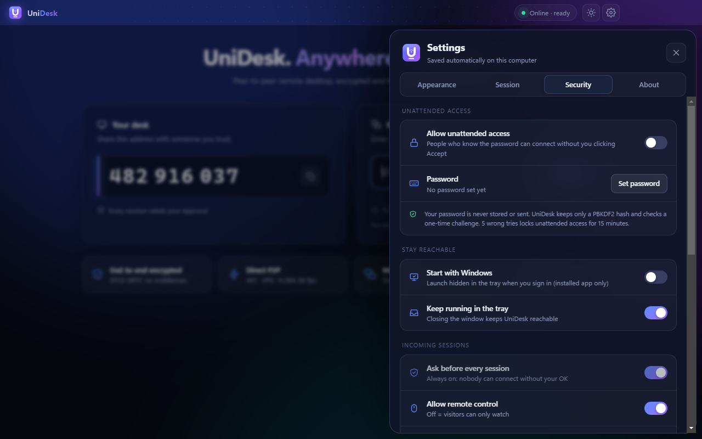

UniDesk. Anywhere. Instantly.
The free, open-source remote desktop for Windows, Mac and Linux, with a mobile viewer for your phone. Connect to any computer with a 9-digit address: peer-to-peer, end-to-end encrypted, up to 4K at 60 fps. A private alternative to AnyDesk and TeamViewer.

Everything you need from remote desktop software
Fast, private and packed with features, free for everyone.
End-to-end encrypted
WebRTC DTLS-SRTP. Your screen goes straight to your partner, never through our servers.
4K 60 fps, low latency
AV1, VP9 and H.264 with screen-content tuning and live stats.
Unattended access
Connect to your own PCs with a password. Hashed, challenge–response, brute-force lockout.
Multi-monitor
Switch remote screens from live thumbnails or keyboard shortcuts.
Clipboard sync
Copy here, paste there, plus "type my clipboard" for fields that block paste.
File transfer
Drag and drop files onto the remote screen.
Record & screenshot
Save sessions as video and capture screenshots in one click.
Auto-reconnect
Dropped Wi-Fi? UniDesk reconnects by itself.
Host controls
View-only, block files or clipboard, idle disconnect, lock the PC when a session ends.
Address book
Name and pin your desks; see remote PC info at a glance.
Invite links
Send a link; it opens UniDesk and connects in one click.
Draw on their screen
Circle the button you mean: strokes appear on their real screen.
Your own servers
Optional private signaling and TURN relay for locked-down networks.
One-time codes
Share a code that works once, then changes by itself.
Remote file browser
Browse their drives and download what you need, when allowed.
Remote task manager
Live CPU and memory per process. End a frozen app in one click.
Restart & reconnect
Restart their PC and UniDesk reconnects as soon as it's back.
Allow-list
Only the desks you trust can even ask to connect.
Privacy screen
Black out the remote monitor while you work. You still see everything.
Remote file manager
Upload into any folder, create, rename and delete remote files.
Block their input
Lock the remote mouse and keyboard so nobody interferes while you work.
Plain wallpaper
The wallpaper hides during sessions for a faster, sharper picture.
Session recording
Optionally record every incoming session as a security log. Visitors are always told.
Sleep, sign out, shut down
Power the remote PC down or sign its user out from the Keys menu.
Remote PC info
Live CPU, memory, disks, battery, network and uptime at a glance.
Open a link there
Send a web address and it opens in their browser.
Text snippets
Save commands and text you type often, then type them on the remote PC in one click.
Address book backup
Search your desks, and export or import them to move to a new PC.
Phone control by QR code
Scan the code on your PC to control it from your phone. Send and receive files, share the clipboard and chat both ways.
Remote terminal
Run commands on the remote PC: only when the other person allows it.
Wake-on-LAN
Wake up a sleeping PC on your network, then connect.
LAN mode
On the same network? Connect with no internet server at all.
Automatic updates
Always on the latest build, verified and installed for you.
Chat & voice
Message or talk to your partner without leaving the session.
Beautiful by design
Dark, light and system themes with six accent colours.
See UniDesk in action
A modern interface that stays out of your way.




Connect in seconds
No sign-up, no port forwarding, no configuration.
on both computers.
of the computer you want to reach.
or use your unattended-access password.
UniDesk vs AnyDesk vs TeamViewer
The open-source remote desktop that respects your privacy.
| UniDesk | AnyDesk | TeamViewer | |
|---|---|---|---|
| Price | Free forever | Free for personal use | Free for personal use |
| Open source | Yes (MIT) | No | No |
| Account required | No | No | Often |
| Peer-to-peer video | Yes | Yes | Partly |
| Unattended access | Yes | Yes | Yes |
| Windows & Mac | Yes | Yes | Yes |
| Self-hostable | Yes | Enterprise | Enterprise |
Frequently asked questions
Is UniDesk really free?
Yes. UniDesk is free forever and open source under the MIT license: no account, subscription or commercial-use fee.
Is UniDesk a good AnyDesk or TeamViewer alternative?
UniDesk covers the core features (address-based connections, remote control, unattended access, file transfer, clipboard sync and multi-monitor) and keeps your video peer-to-peer.
Does UniDesk work on Linux?
Yes. Download the x64 AppImage, make it executable (chmod +x) and run it. Remote control works on X11 desktops; Wayland sessions have not been tested yet.
Can I control my computer from my phone?
Yes. Open the mobile viewer in your phone's browser (Safari or Chrome), type your computer's address and connect. Tap to click, hold to right-click, two fingers to scroll, pinch to zoom. You can add it to your home screen like an app.
Does UniDesk work on Mac?
Yes, on macOS for Apple Silicon and Intel. Grant Screen Recording and Accessibility in System Settings so a partner can see and control your Mac. The first time, right-click the app and choose Open.
Is it secure?
Connections are end-to-end encrypted. Every session needs your approval unless you enable unattended access, whose password is never stored, only a PBKDF2 hash, with lockout after 5 wrong tries.
Why does Windows or macOS warn me when I open it?
UniDesk isn't code-signed yet. The source is public so anyone can audit it. Windows SmartScreen: click More info → Run anyway. Windows Smart App Control blocks the installer, so download the portable .zip instead: unzip it and run UniDesk.exe. It runs on Electron's official program file, which Smart App Control recognises. macOS 15 and later: open UniDesk once, then go to System Settings → Privacy & Security and click Open Anyway. On any device you can also use the mobile viewer in the browser, with nothing to install.